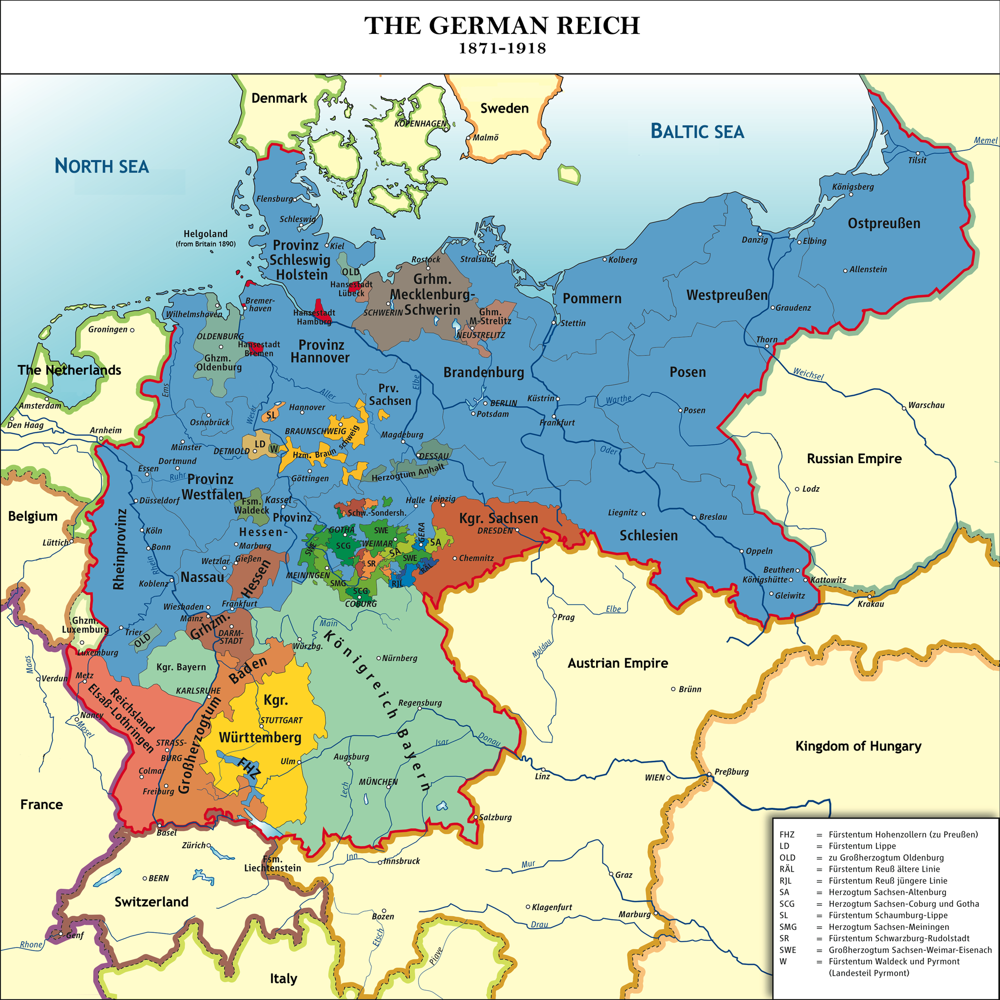
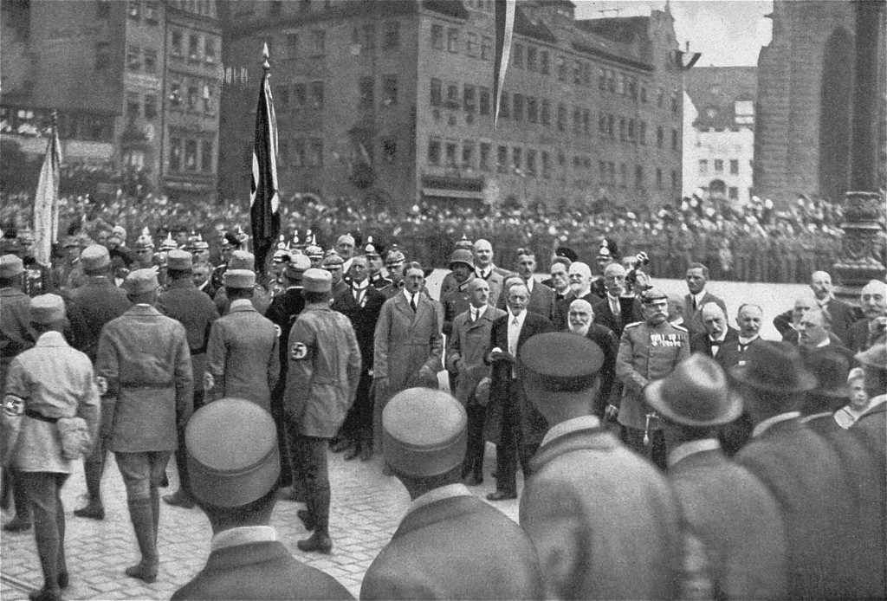
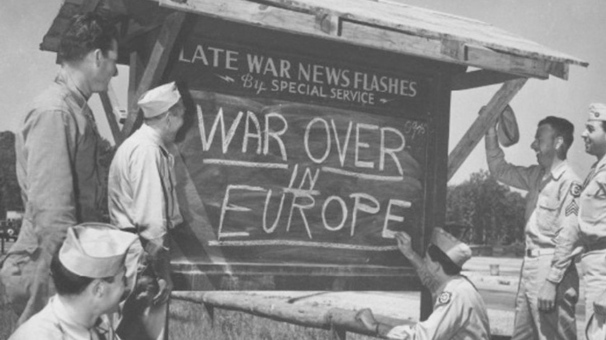
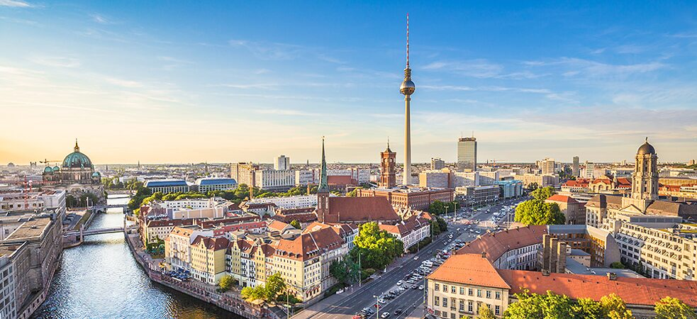

A Nation Through Time
Explore the defining chapters; with key figures, causes, consequences, and legacy; that transformed a fragmented collection of states into one of the world's leading democracies.
Empire
WWI
Nazi Rise
WWII End
Reunification
Modern
The German Empire Proclaimed
On 18 January 1871, in the dazzling Hall of Mirrors at Versailles — chosen deliberately to humiliate France — King Wilhelm I of Prussia was proclaimed Kaiser of the newly unified German Empire (Deutsches Reich). The proclamation was the culmination of three short but decisive wars orchestrated by Chancellor Otto von Bismarck: against Denmark (1864), Austria (1866), and France (1870–71).
The new Empire unified 25 constituent states — kingdoms, grand duchies, duchies, and free cities — under Prussian hegemony. A federal constitution was adopted, creating a Reichstag (parliament) elected by universal male suffrage, though real power remained with the Kaiser and his Chancellor. The Gründerzeit ("founders' era") that followed saw explosive industrial and economic growth, rapid urbanisation, expansion of railways, and the emergence of Germany as a major industrial power rivalling Britain.
Bismarck's domestic policy was defined by the Kulturkampf (conflict with the Catholic Church) and the passing of anti-socialist laws, while his foreign policy prioritised maintaining a web of alliances to isolate France. His dismissal by Kaiser Wilhelm II in 1890 removed a critical stabilising force and set Germany on a more aggressive course.

Kaiser Wilhelm I, first Emperor of the unified German Reich
Politics is the art of the possible, the attainable — the art of the next best.
— Otto von Bismarck, Chancellor of the German EmpireWorld War I & the Weimar Republic
The assassination of Austro-Hungarian Archduke Franz Ferdinand in Sarajevo on 28 June 1914 triggered a cascade of alliance obligations that dragged all major European powers into war within weeks. Germany, as a leading member of the Central Powers alongside Austria-Hungary and the Ottoman Empire, mobilised nearly 13 million soldiers over four years of devastating industrial warfare.
Germany fought on two fronts simultaneously: the Western Front in France and Belgium, where trench warfare produced a stalemate of unprecedented carnage (the Battle of the Somme alone caused over one million casualties in 141 days), and the Eastern Front against Russia. The war at sea — including unrestricted U-boat warfare — eventually drew the United States into the conflict in April 1917. Germany's Spring Offensive of 1918 initially broke the Allied lines but was ultimately repulsed, leading to total collapse.
The Armistice of 11 November 1918 and the subsequent Treaty of Versailles (1919) imposed punishing reparations of 132 billion gold marks, stripped Germany of 13% of its territory and 10% of its population, limited its army to 100,000 men, and assigned sole "war guilt" to Germany under Article 231. These conditions created deep political resentments exploited by nationalist movements. The Weimar Republic (1919–1933) that emerged faced hyperinflation in 1923 — when a loaf of bread cost 200 billion marks — followed by the Great Depression after 1929, which sent unemployment above 30%.

German soldiers in the trenches of the Western Front, c. 1916
The war which came to us was not what we had expected. It was something fundamentally different — total, modern, industrial annihilation.
— Erich Maria Remarque, All Quiet on the Western Front (1929)The Third Reich: Rise of National Socialism
On 30 January 1933, President Paul von Hindenburg appointed Adolf Hitler as Chancellor of Germany. The Nazi Party (NSDAP) had exploited mass unemployment, political extremism, and resentment over Versailles to rise from 2.6% of the vote in 1928 to 37.4% in July 1932, becoming the largest party in the Reichstag. Hitler's appointment was arranged by conservative elites who believed they could control him.
Within months, the Nazi regime dismantled democracy: the Reichstag Fire Decree (28 February 1933) suspended civil liberties; the Enabling Act (23 March 1933) gave Hitler dictatorial powers; trade unions were abolished; and the one-party state was established. The "Night of the Long Knives" (30 June 1934) eliminated internal rivals. On Hindenburg's death in August 1934, Hitler merged the offices of Chancellor and President, declaring himself Führer.
The regime pursued aggressive rearmament in violation of Versailles, remilitarised the Rhineland (1936), annexed Austria in the Anschluss (March 1938), and seized the Sudetenland under the Munich Agreement (September 1938). Domestically, systematic persecution of Jews escalated from legal exclusion (Nuremberg Laws, 1935) to the nationwide pogrom of Kristallnacht (9–10 November 1938), to the Holocaust — the industrialised murder of six million Jews and five to six million others in extermination camps including Auschwitz, Treblinka, and Sobibór. It remains the most documented genocide in history.

Nazi rally at Nuremberg, 1935 — mass spectacle used as political propaganda
First they came for the socialists, and I did not speak out. Then they came for the trade unionists, and I did not speak out. Then they came for the Jews, and I did not speak out. Then they came for me — and there was no one left to speak for me.
— Martin Niemöller, Protestant pastor, Holocaust survivorEnd of WWII & A Divided Germany
Germany's unconditional surrender on 8 May 1945 — V-E Day (Victory in Europe Day) — ended six years of the most destructive war in human history, claiming an estimated 70–85 million lives worldwide. Germany itself lay in ruins: over 3.5 million German civilians had been killed by bombing, hunger, and displacement; Berlin was reduced to rubble; and over 12 million ethnic Germans were expelled from Eastern Europe in the largest forced migration in history.
The country was divided into four Allied occupation zones controlled by the USA, USSR, Britain, and France. Berlin, deep in the Soviet zone, was similarly divided. Growing tensions between the Western Allies and the Soviet Union crystallised into the Cold War. The Berlin Blockade (June 1948–May 1949), in which the Soviets cut off all land routes to West Berlin, was met by the Western Allied Berlin Airlift — 278,228 flights over 15 months delivering 2.3 million tonnes of supplies.
On 23 May 1949, the Federal Republic of Germany (FRG / West Germany) was proclaimed with Konrad Adenauer as its first Chancellor; on 7 October 1949, the German Democratic Republic (GDR / East Germany) was established under Soviet influence. West Germany joined NATO in 1955 and rebuilt rapidly into an economic powerhouse (the Wirtschaftswunder, "economic miracle"). East Germany, a one-party Socialist state under the SED, erected the Berlin Wall on 13 August 1961 to stem the flight of citizens westward — over 3.5 million had already left.

The Brandenburg Gate in ruins, Berlin, 1945 — symbol of a shattered nation
We do not want to return to what was before. We want to build something new, better, fairer — a Germany in which democracy is not merely a constitutional form but a living reality.
— Konrad Adenauer, first Chancellor of the Federal Republic, 1949German Reunification & the Fall of the Wall
The fall of the Berlin Wall on the night of 9 November 1989 was one of the most dramatic events of the 20th century. Sparked by a misread press conference announcement by GDR spokesman Günter Schabowski — who said new travel regulations were effective "immediately, without delay" — thousands of East Berliners flooded the checkpoints. Border guards, overwhelmed and without orders, opened the gates. Within hours, jubilant crowds were dismantling the Wall with hammers and pickaxes.
The Wall's fall was the culmination of the Peaceful Revolution (Friedliche Revolution): mass protests across East German cities, particularly the Monday demonstrations in Leipzig that drew up to 300,000 people, and the broader collapse of Soviet-aligned regimes across Eastern Europe in 1989. Soviet leader Mikhail Gorbachev's reforms of glasnost and perestroika had undermined the ideological underpinning of the bloc.
German Chancellor Helmut Kohl moved swiftly, presenting his Ten-Point Plan for reunification in November 1989. Currency union followed on 1 July 1990, when East Germans exchanged their worthless Ostmarks for Deutschmarks at parity. The Two Plus Four Treaty — signed by the two Germanys and the four wartime Allies — provided the international framework. On 3 October 1990, Germany was formally reunified. The integration was immense: West Germany absorbed 16 million East Germans, over 1 trillion Deutschmarks were transferred over the following decade, and the Treuhandanstalt privatised or closed 8,500 East German state enterprises.

Crowds celebrate atop the Berlin Wall, 10 November 1989
We are one people! (Wir sind ein Volk!)
— Chant of demonstrators in Leipzig and East Berlin, autumn 1989Modern Germany: Europe's Anchor
Reunified Germany rapidly became the political and economic anchor of a united Europe. As a founding member of the European Union and NATO, Germany has played a central role in European integration — from the Maastricht Treaty (1992) that created the euro, to EU enlargement into Eastern Europe. The Bundestag moved from Bonn to Berlin's rebuilt Reichstag in 1999, under Norman Foster's iconic glass dome, symbolising transparency and democratic renewal.
Germany has navigated major challenges: the Agenda 2010 labour reforms under Chancellor Gerhard Schröder (2003) restructured the welfare state and restored competitiveness; Chancellor Angela Merkel's 16-year tenure (2005–2021) saw Germany through the 2008 financial crisis, the Eurozone debt crisis, the 2015 refugee crisis — when Germany admitted over one million asylum seekers — and the COVID-19 pandemic. Germany's Energiewende (energy transition) has made it a global leader in renewable energy, with over 46% of electricity from renewables by 2023, even as the nuclear phase-out debate continues.
Today, Germany is the world's third-largest economy (GDP ~$4.5 trillion), home to global industrial giants (Volkswagen, Siemens, BASF, SAP), and a major exporter of cars, machinery, and chemicals. Its federal system of 16 Länder (states), independent judiciary, free press, and robust civil society stand as achievements built consciously on the lessons of its dark 20th-century history. The concept of Erinnerungskultur — a culture of remembrance — and Germany's frank confrontation with the Nazi past remains a model for post-conflict societies worldwide.

The Reichstag in Berlin, seat of the German Bundestag since 1999
The strength of democracy lies not in forgetting the past, but in the courage to confront it — and to build something better from its ruins.
— Attributed to the spirit of post-war German democratic renewal